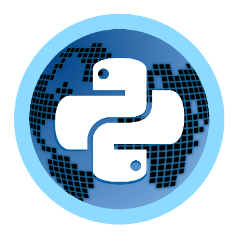

Welcome to PyPlanet’s documentation!¶
{kind=link}
PyPlanet is a Maniaplanet Dedicated Server Controller that works on Python 3.5 and later. Because Maniaplanet is using an system that can be event based we use AsyncIO to provide a event loop and have simultaneously processing of received events from the dedicated server.
Features:
- Core: Super fast and ‘event’ driven based on Python 3.5
asyncioeventloop. - Core: Stable and well designed core and apps system. (Inspired by Django).
- Core: All apps will handle the game experience.
- Core: Adjustable settings for all your apps.
- App: Local Records, including widget.
- App: Admin Commands, Providing with basic commands and control for maintaining your server.
- App: Karma, Let your players vote on your maps!
- App: Jukebox, Let your players ‘juke’ the next map.
- App: ManiaExchange, Simply add your maps directly from your
- App: Players, This app shows messages when players join and leave.
Do you want to install PyPlanet, head towards our Getting Started Manual
The code is open source, and available on GitHub.
The main documentation for the site is organized into a couple sections:
Information about development of apps and the core is also available under:
User Documentation¶
Apps Documentation¶
Developer Documentation¶
- Core
- Apps
- API Documentation
- pyplanet.apps
- pyplanet.views
- pyplanet.core.exceptions
- pyplanet.core.instance
- pyplanet.core.ui
- pyplanet.core.storage
- pyplanet.core.events
- pyplanet.god
- pyplanet.contrib.map
- pyplanet.contrib.player
- pyplanet.contrib.command
- pyplanet.contrib.permission
- pyplanet.contrib.setting
- pyplanet.contrib.mode
- pyplanet.contrib.converter
- pyplanet.utils
About PyPlanet¶